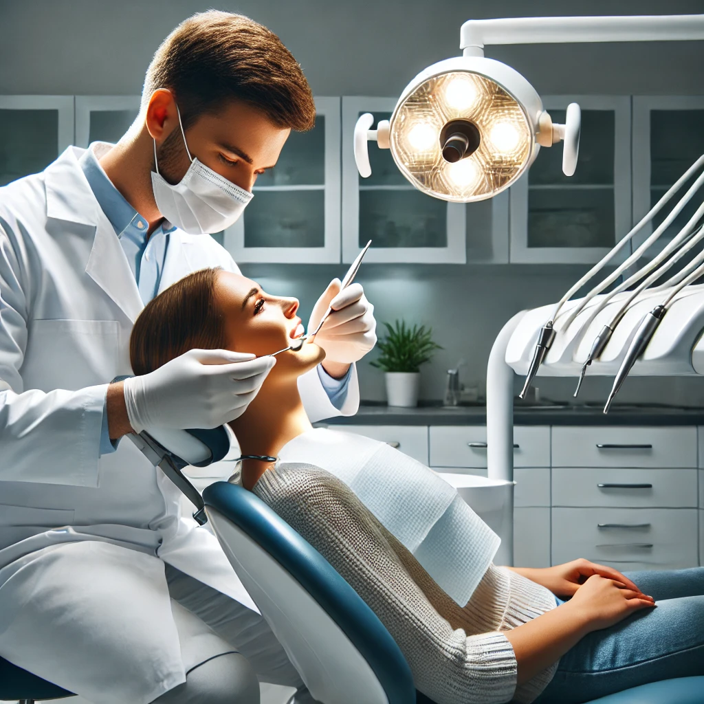

Para melhor uso do APP recomenda-se:
- Realizar uma profilaxia profissional no paciente.
- Secar o esmalte dentário do elemento a ser analisado.
Cuidado: Não prolongue a secagem para evitar desidratação, que pode alterar temporariamente o aspecto do esmalte.
- Assegurar-se de que a região avaliada esteja bem iluminada.
